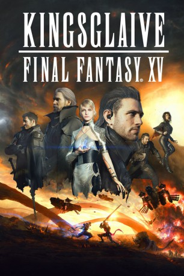

#4284 Kingsglaive: Final Fantasy XV
 
 IMDB-Wertung: 7.0 / 10
IMDB-Wertung: 7.0 / 10  Tomatometer: 12
Tomatometer: 12  Metascore: 0
Metascore: 0 
The magical kingdom of Lucis is home to the hallowed Crystal, but the menacing empire of Niflheim will stop at nothing to make it theirs. War has raged between the two for as long as most can remember. King Regis of Lucis commands an elite force of soldiers dubbed the Kingsglaive. Wielding their king's magic, Nyx Ulric and his fellow glaives stand before the crown city of Insomnia, fighting to stay the inexorable advance of Niflheim's imperial army. Before the overwhelming military might of the empire, King Regis can only salvage his kingdom by accepting an ultimatum-he must cede all lands outside the crown city, and see his son, Prince Noctis, wed to Lady Lunafreya, the former princess of Tenebrae now captive of Niflheim. As the war of wills rages, the machinations of Niflheim transform Insomnia into an awe-inspiring battleground, pulling Nyx into a struggle for the very survival of the kingdom.
Jahr: 2016
Dauer: 115 Minuten
FSK: 12
Land: Japan Studio: Sony Pictures Home EntertainmentTonspuren: DD5.1 - ,
Untertitel: Deutsch,
Auflösung: 1080p (1920x796) Größe: 4372 MB
Genre: Action, Drama, Sci-Fi, Abenteuer, Fantasy, Animation/Trick
Regisseur: Takeshi Nozue
Drehbuch: David Lowery
Soundtrack:
Darsteller:
 Aaron Paul als Nyx Ulric
Aaron Paul als Nyx Ulric- Neil Newbon als Nyx Ulric, motion capture / Petra Fortis
 Lena Headey als Lunafreya Nox Fleuret
Lena Headey als Lunafreya Nox Fleuret Sean Bean als Regis Lucis Caelum CXIII
Sean Bean als Regis Lucis Caelum CXIII- Jon Campling als Regis Lucis Caelum, motion capture & 3D scan model / Ardyn Izunia, motion capture
 Adrian Bouchet als Titus Drautos
Adrian Bouchet als Titus Drautos- Alexa Kahn als Crowe Altius
- Liam Mulvey als Libertus Ostium / Libertus Ostium, motion capture / Clarus Amicitia, motion capture
- Andrea Tivadar als Crowe Altius, motion capture
 Todd Haberkorn als Luche Lazarus
Todd Haberkorn als Luche Lazarus John DeMita als Clarus Amicitia
John DeMita als Clarus Amicitia- Gil Darnell als Clarus Amicitia, motion capture
 David Gant als Iedolas Aldercapt
David Gant als Iedolas Aldercapt Darin De Paul als Ardyn Izunia
Darin De Paul als Ardyn Izunia- Edward Saxby als Ardyn Izunia, performance capture
 Trevor Devall als Ravus Nox Fleuret
Trevor Devall als Ravus Nox Fleuret Ryan Oliva als Petra Fortis, performance capture
Ryan Oliva als Petra Fortis, performance capture Will Bowden als Pelna Khara, motion capture / Pruvia Colpus
Will Bowden als Pelna Khara, motion capture / Pruvia Colpus Max Mittelman als Tredd Furia
Max Mittelman als Tredd Furia- Mehran Armando als Tredd Furia, performance capture
- David Chun Cheung als Sonitus Bellum, performance capture
- Hyrum Hansen als Young Noctis
- Bo Bragason als Young Luna, motion capture
 Zachary Gordon als Young Ravus
Zachary Gordon als Young Ravus Keith Silverstein als Tavern Owner / Barkeeper
Keith Silverstein als Tavern Owner / Barkeeper- Kezia Burrows als Miscellaneous Characters
 Ben Pronsky als Kingsglaive
Ben Pronsky als Kingsglaive- James D. Mortellaro als Kingsglaive
 Jesse Burch als Kingsglaive
Jesse Burch als Kingsglaive Kyle Hebert als Kingsglaive
Kyle Hebert als Kingsglaive Lex Lang als Niflheim Official
Lex Lang als Niflheim Official David Sobolov als Radio Voice
David Sobolov als Radio Voice Lew Temple als High Officials
Lew Temple als High Officials Rif Hutton als High Officials
Rif Hutton als High Officials Michael McConnohie als Tenebrae Guard
Michael McConnohie als Tenebrae Guard- Adam Claus als Additional Voice
 Joe Thomas als Additional Voice
Joe Thomas als Additional Voice Masi Oka als Bureaucrat
Masi Oka als Bureaucrat Ray Chase als Noctis Lucis Caelum
Ray Chase als Noctis Lucis Caelum- Adam Croasdell als Ignis Scientia
 Robbie Daymond als Prompto Argentum
Robbie Daymond als Prompto Argentum Shioli Kutsuna als Lunafreya Nox Fleuret
Shioli Kutsuna als Lunafreya Nox Fleuret Alex Martin als Motion Capture Performer
Alex Martin als Motion Capture Performer- Johan Picard als Nyx Ulric, performance capture
- Amanda Piery als Lunafreya Nox Fleuret, motion capture
- Sonia Maltceva als Lunafreya Nox Fleuret, performance capture
- Greg Blackford als Luche Lazarus, performance capture
- David Nutley als Ravus Nox Fleuret, motion capture / Tredd Furia, motion capture
 Ben Diskin als Pelna Khara
Ben Diskin als Pelna Khara- Tausif Patel als Pelna Khara, performance capture
Datei: X:\HD-Trick-Collections\Final Fantasy\Kingsglaive Final Fantasy XV (2016, FSK12, 1920x796).mkv seit 31.08.2016
Festplatte: Kinder-Filme+Trick
 Alle Filme aus Gruppe 'HD-Trick-Collections\Final Fantasy'
Alle Filme aus Gruppe 'HD-Trick-Collections\Final Fantasy'